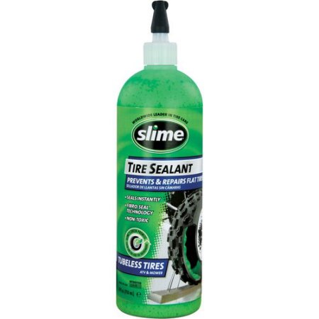

.png)


Step 1: Pick the Right Sealant
In order to seal a tire, the proper tire sealant is necessary. Though there might be some sealants which say they are suitable for all vehicles, this is not the case. The tire size of the vehicle factors into the final product you choose. Trucks, for example, have much larger tires and thus need more sealant. In addition, specialty tires may need different materials in the sealant to make sure things stay sealed. It is helpful to contact your tire manufacturer for their specific recommendation.
Step 2: Safety Matters
Keep in mind that tire sealant is made from flammable materials so you will not want to smoke as you are sealing off the tire. In addition, point the sealant bottle away from your face before you discharge the material in it.
Step 3: Putting the Sealant in Place
Once you have the car up on blocks or on a lift, you can then then insert the tip of the sealant bottle in the hole. Following the instructions on the label, slowly fill up the cavity as directed. If you notice that you're experiencing leakage as you're putting in the sealant, stop what you're doing. The edge of the nozzle may not be as close to the tire surface as it needs to be. Pull the nozzle out and readjust it to make sure it's in the right place. If you see a lot of sealant leaking out of the tire, it's time to start the process over and readjust the nozzle once again. Continue to push down the button on the can until you're completely out of sealant.
Step 4: Finishing Up the Process
After putting all of the sealant in the tire, it's time to fill the tire back up with air. Using the air pump or a gas station pump, fill the tire up until you reach the desired tire pressure, as indicated by your tire manufacturer. Once you've fixed the tire with sealant, realize that you might need to still replace the tire. Tires with holes in them are tires which will eventually crack and tear apart.
With tire puncture sealant, you can manage to fix your tire long enough to get you to work. But this is not a long term solution for the safety of yourself and the passengers in your car.
